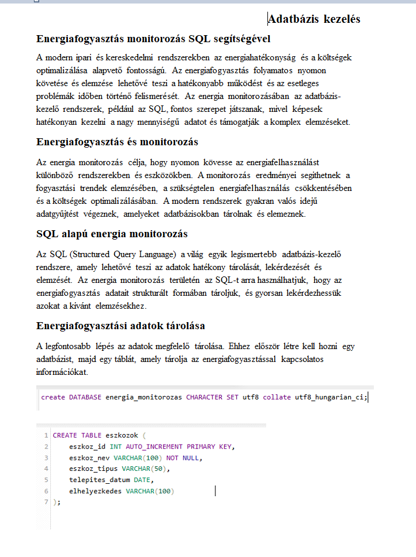
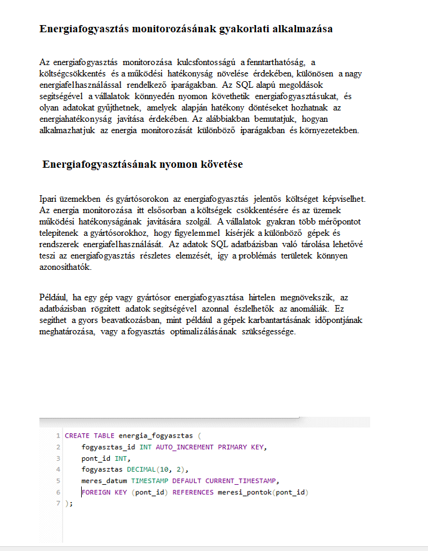
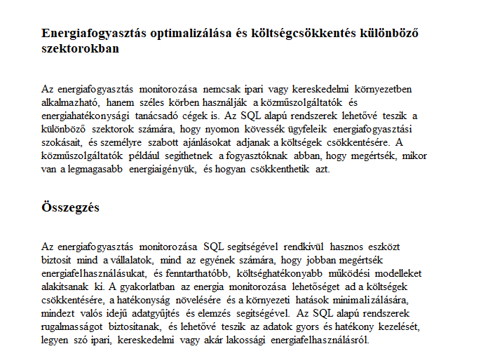

Adatbáziskezelés alapjai
Önreflexó
Az Adatbázis-kezelés tantárgy alapvető fontosságú volt számomra, mivel mélyebb megértést adott az adatkezelés és az adatbázisok működéséről, amelyek minden informatikai és üzleti rendszert központilag érintenek. Az oktatás során szerzett tudás nemcsak a technikai aspektusok megértésében segített, hanem a problémamegoldó képességemet is fejlesztette.
Tematika:
- Adatbázisok és típusok


